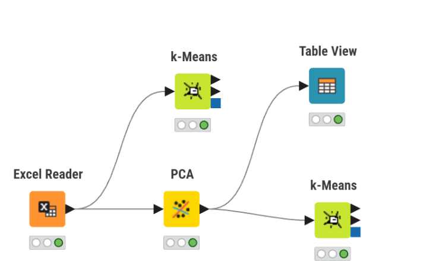
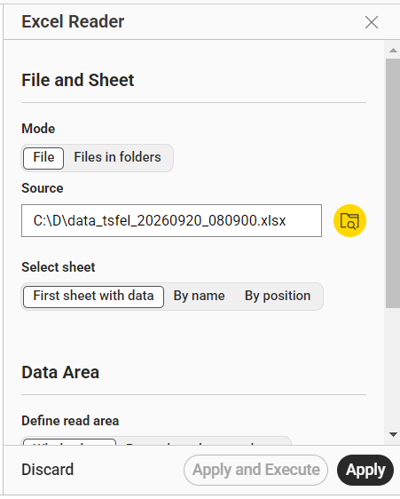
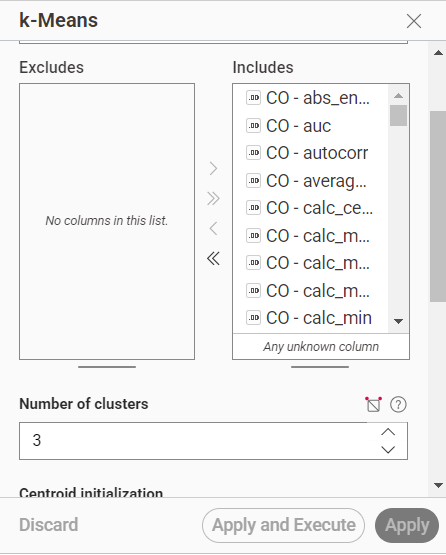
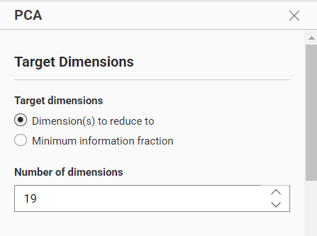
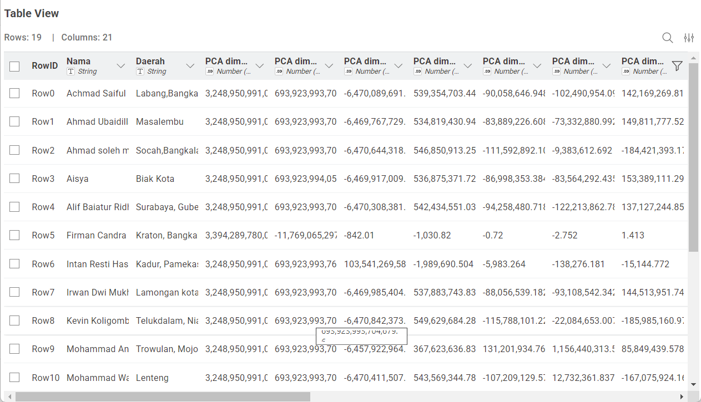
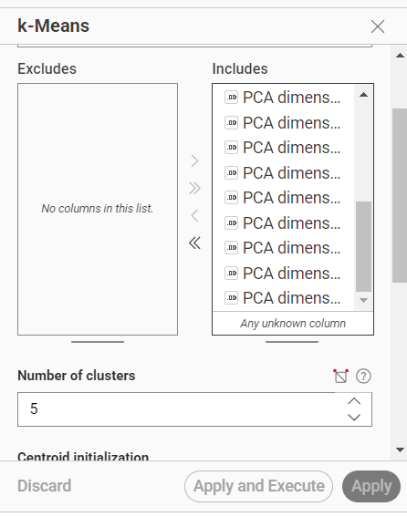
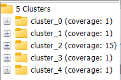

Analisis dan Pengelompokan Data Kualitas Udara Menggunakan PCA dan K-Means pada KNIME#
Analisis Data Fitur TSFEL Menggunakan PCA dan K-Means pada KNIME#
1. Tujuan#
Workflow ini digunakan untuk melakukan analisis pengelompokan (clustering) terhadap data fitur TSFEL dari data kualitas udara.
Pada workflow, terdapat dua jalur clustering yang berbeda:

Jalur pertama: data dari Excel Reader langsung diproses menggunakan k-Means dengan 3 cluster, tanpa PCA.
Jalur kedua: data dari Excel Reader diproses terlebih dahulu menggunakan PCA hingga menjadi 19 dimensi, kemudian hasil PCA diproses menggunakan k-Means dengan 5 cluster.
Dengan struktur tersebut, workflow dapat digunakan untuk melihat perbedaan hasil clustering antara:
data fitur asli, dan
data yang telah direduksi menggunakan PCA.
2. Data yang Digunakan#
Data berasal dari file Excel:
data_tsfel_20260920_080900.xlsx
Sheet yang digunakan:
Semua Fitur
Berdasarkan pemeriksaan data Excel, diperoleh:
Keterangan |
Jumlah |
|---|---|
Jumlah baris/data |
19 |
Jumlah seluruh kolom |
274 |
Kolom identitas |
2 |
Jumlah fitur TSFEL |
272 |
Fitur CO |
68 |
Fitur SO2 |
68 |
Fitur CH4 |
68 |
Fitur NO2 |
68 |
Dua kolom identitas adalah:
NamaDaerah
Sementara itu, terdapat 272 fitur TSFEL yang terdiri dari:
68 fitur CO
68 fitur SO2
68 fitur CH4
68 fitur NO2
Perhitungannya:
68 × 4 = 272 fitur TSFEL
Sehingga struktur data secara umum adalah:
19 data
│
├── Nama
├── Daerah
│
└── 272 fitur TSFEL
├── 68 fitur CO
├── 68 fitur SO2
├── 68 fitur CH4
└── 68 fitur NO2
3. Gambaran Workflow#
Workflow terdiri dari lima node utama:
4. Penjelasan Setiap Node#
4.1 Excel Reader#
Fungsi#
Excel Reader merupakan node pertama yang digunakan untuk membaca data dari file Excel.

Node ini menjadi sumber data bagi dua jalur analisis. Dengan demikian, data dari Excel digunakan untuk dua proses yang berbeda.
Data yang Dibaca#
File:
data_tsfel_20260920_080900.xlsx
Sheet:
Semua Fitur
Data terdiri dari:
19 baris
274 kolom
2 kolom identitas
272 fitur TSFEL
Cara Konfigurasi#
Masukkan node Excel Reader ke workflow.
Klik dua kali node tersebut.
Pilih file Excel.
Pilih sheet
Semua Fitur.Periksa tipe data setiap kolom.
Klik Apply.
Klik Execute.
Hasil#
Setelah dijalankan, Excel Reader menghasilkan tabel yang dapat diteruskan langsung ke k-Means dan juga ke PCA.
5. Jalur Pertama: k-Means Tanpa PCA#
5.1 k-Means Bagian Atas#
Fungsi#
Node k-Means bagian atas melakukan clustering langsung terhadap data dari Excel Reader.
Node ini tidak melewati PCA.
Konfigurasi#
Pada k-Means ini digunakan:

Number of clusters = 3
Dengan demikian, data dikelompokkan menjadi tiga cluster.
Cara Konfigurasi#
Hubungkan output Excel Reader langsung ke k-Means bagian atas.
Buka konfigurasi k-Means.
Atur:
Number of clusters = 3
Tentukan kolom numerik yang digunakan sebagai variabel clustering.
Jalankan node dengan Execute.
Hasil#
Setiap data akan memperoleh label cluster berdasarkan kemiripan pada data fitur yang digunakan.
Karena proses PCA tidak dilakukan, clustering pada jalur ini menggunakan data fitur sebelum reduksi PCA.
6. Jalur Kedua: PCA#
6.1 PCA (Principal Component Analysis)#
Fungsi#
PCA digunakan untuk melakukan reduksi dimensi terhadap fitur TSFEL.
Data awal memiliki:
272 fitur TSFEL
Pada workflow ini, PCA dikonfigurasi dengan:
Dimension(s) to reduce to = 19
Sehingga alurnya:
272 fitur TSFEL
↓
PCA
↓
19 dimensi

Cara Konfigurasi#
Hubungkan output Excel Reader ke PCA.
Buka konfigurasi PCA.
Atur:
Dimension(s) to reduce to = 19
Pastikan kolom identitas tidak digunakan sebagai variabel numerik PCA.
Klik Apply.
Klik Execute.
Tujuan PCA#
PCA digunakan untuk:
Mengurangi jumlah dimensi data.
Menyederhanakan representasi data.
Mengurangi jumlah variabel yang diproses dalam clustering.
Membentuk komponen baru yang mewakili variasi data.
7. Table View#
Fungsi#
Table View digunakan untuk melihat hasil data setelah proses PCA.
Node ini tidak melakukan clustering.
Table View hanya digunakan untuk memeriksa hasil transformasi data.
Informasi yang Dapat Diamati#
Melalui Table View, hasil PCA dapat diperiksa dalam bentuk tabel, misalnya:
baris data
komponen hasil PCA
nilai masing-masing komponen
informasi identitas yang diteruskan oleh workflow

Cara Penggunaan#
Hubungkan output PCA ke Table View.
Jalankan PCA.
Buka Table View.
Periksa hasil reduksi dimensi.
8. k-Means dengan PCA#
8.1 k-Means#
Fungsi#
Node k-Means bagian bawah melakukan clustering terhadap hasil PCA.
Berbeda dengan k-Means bagian atas, node ini menerima data setelah proses reduksi dimensi.
Konfigurasi#
Pada k-Means bagian bawah digunakan:
Number of clusters = 5
Cara Konfigurasi#
Hubungkan output PCA ke k-Means bagian bawah.
Buka konfigurasi k-Means.
Atur:
Number of clusters = 5

Tentukan variabel numerik hasil PCA sebagai variabel clustering.
Jalankan node.
Hasil#
Data dikelompokkan menjadi lima cluster:

9. Perbedaan Dua Jalur Clustering#
Ini merupakan bagian utama dari workflow terbaru.
Aspek |
k-Means Atas |
k-Means Bawah |
|---|---|---|
Sumber data |
Excel Reader |
Output PCA |
Melalui PCA |
Tidak |
Ya |
Jumlah dimensi |
Data fitur asli |
19 dimensi |
Jumlah cluster |
3 |
5 |
Tujuan |
Clustering data asli |
Clustering data setelah reduksi |
10. Perbandingan Workflow#
Workflow ini memungkinkan dilakukan perbandingan berdasarkan dua pendekatan.
Pendekatan 1 — Data Asli#
Excel
↓
Fitur TSFEL
↓
k-Means
↓
3 Cluster
Pada pendekatan ini, proses clustering dilakukan tanpa reduksi dimensi PCA.
Pendekatan 2 — Data Hasil PCA#
Excel
↓
Fitur TSFEL
↓
PCA
↓
19 Dimensi
↓
k-Means
↓
5 Cluster
Pada pendekatan ini, clustering dilakukan setelah data direduksi menjadi 19 dimensi.
11. Interpretasi Hasil#
Hasil k-Means dari kedua jalur dapat digunakan untuk melihat perbedaan pengelompokan data.
Pada jalur pertama:
k = 3
data dibagi menjadi tiga cluster berdasarkan fitur yang digunakan dari data Excel.
Pada jalur kedua:
k = 5
data dibagi menjadi lima cluster berdasarkan komponen hasil PCA.
12. Kelebihan Workflow#
Workflow ini memiliki beberapa kegunaan:
1. Membandingkan data asli dan data hasil PCA#
Karena terdapat dua jalur clustering, hasil pengelompokan dapat dibandingkan antara data asli dan data setelah reduksi dimensi.
2. Menguji pengaruh PCA#
PCA dapat mengubah representasi data sebelum digunakan dalam clustering. Workflow ini menyediakan jalur untuk melihat hasil clustering setelah PCA.
3. Membandingkan jumlah cluster#
Jumlah cluster juga berbeda:
k = 3
dan
k = 5
Sehingga hasil pengelompokan memiliki struktur yang berbeda.
4. Memeriksa hasil PCA#
Table View membantu melihat data setelah PCA sebelum digunakan dalam proses clustering.
13. Hal yang Perlu Diperhatikan#
Ada dua perbedaan sekaligus antara kedua hasil k-Means:
Input datanya berbeda
k-Means atas menggunakan data langsung dari Excel.
k-Means bawah menggunakan hasil PCA.
Jumlah cluster berbeda
k-Means atas menggunakan k = 3.
k-Means bawah menggunakan k = 5.
Oleh karena itu, perbedaan hasil clustering tidak hanya disebabkan oleh PCA, tetapi juga karena jumlah cluster yang digunakan berbeda.
Jika tujuan analisis adalah secara khusus mengukur pengaruh PCA, perbandingan yang lebih terkontrol adalah menggunakan jumlah cluster yang sama pada kedua jalur, misalnya:
Data asli → k-Means k=3
Data PCA → k-Means k=3
Namun, jika tujuan tugas memang menggunakan:
Tanpa PCA → k=3
Dengan PCA → k=5
maka konfigurasi workflow pada gambar sudah mengikuti struktur tersebut.
14. Ringkasan Konfigurasi Node#
No. |
Node |
Input |
Fungsi |
Konfigurasi |
|---|---|---|---|---|
1 |
Excel Reader |
File Excel |
Membaca data |
Sheet |
2 |
k-Means atas |
Excel Reader |
Clustering data asli |
k = 3 |
3 |
PCA |
Excel Reader |
Reduksi dimensi |
Reduce to = 19 |
4 |
Table View |
PCA |
Melihat hasil PCA |
Tampilan tabel |
5 |
k-Means bawah |
PCA |
Clustering data hasil PCA |
k = 5 |